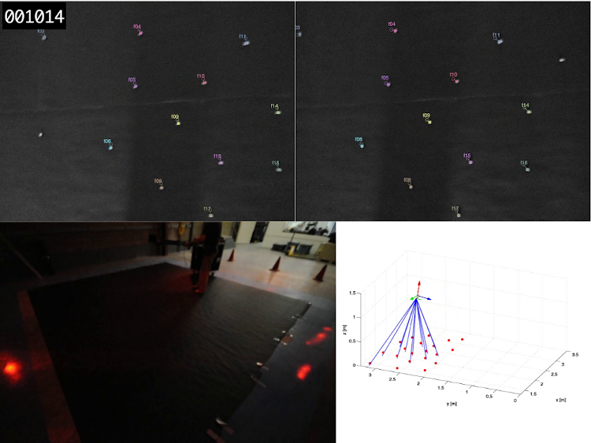
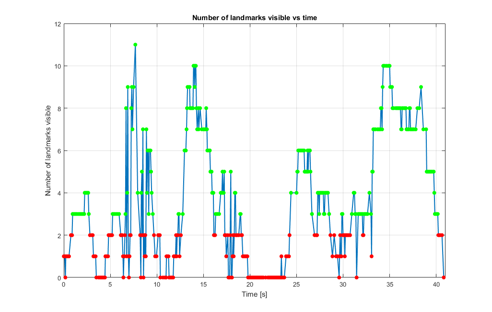
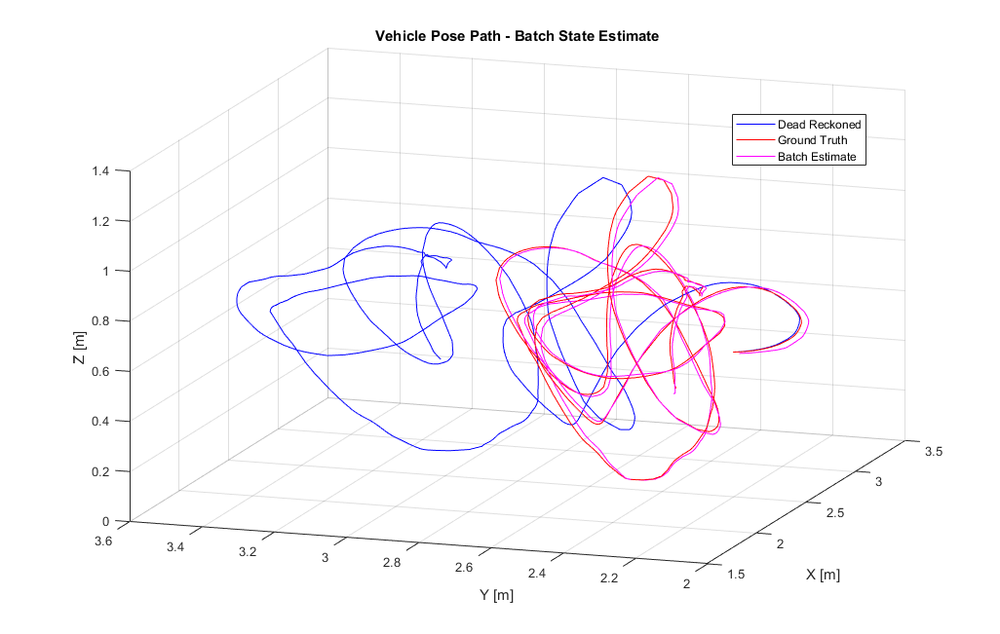
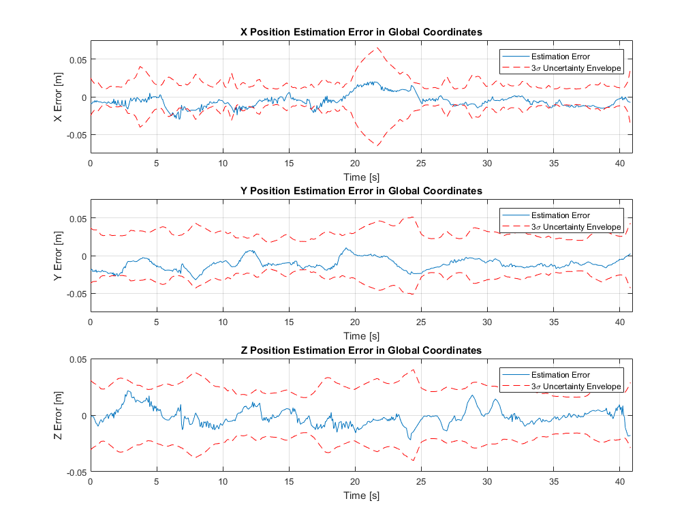
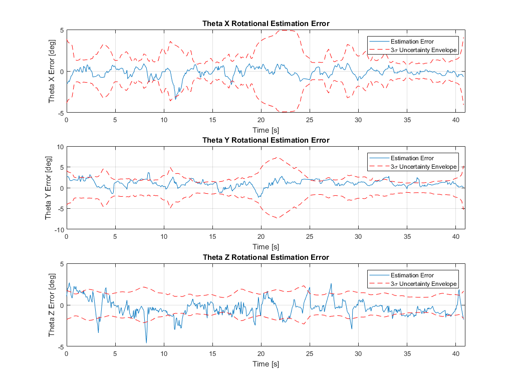

The final assignment in one of my classes at UTIAS, AER 1513 - State Estimation for Robotics, had us solve a batch state estimation problem for a sensor head with both a stereo camera and an IMU attached.
Overview
The task was to derive an estimate for the full 6 DoF pose trajectory of the sensor head(henceforth referred to as the “vehicle”) for a sweeping motion spanning approximately 40 s given a history of IMU and stereo camera measurements. The vehicle was moved back and forth over a canvas with a set of markers on it that were each known to have a given, fixed location. These markers formed landmarks that through the stereo camera images and model could be used to establish an absolute position reference. Measurements to multiple landmarks can then be used to triangulate a position and orientation.
The experimental setup along with sample camera images and the ground truth pose is shown below.

Some simplifications were made to reduced the scope of the problem. The linear acceleration signals were transformed to linear velocities and the stereo camera images were preprocessed to identify the locations of the landmarks within both images, removing the problem of data association. Thus the inputs for the estimation problem consisted of a time history of linear velocity, angular velocity and pixel coordinates for the landmarks in both camera images. Also available were ground truth pose measurements from an external motion capture system for evaluating estimation error, parameters of the stereo camera and the pose of the camera relative to the IMU.
The camera was kept relatively close to the canvas and moved through a range of angles, leading to only some of the landmarks being visible at any given time. For about a third of the event there were fewer than 3 landmarks in view, or sometimes none at all. Given that at least 3 landmarks are needed to fix a position fusing both the camera and IMU data is necessary to obtain a pose estimate for the full trajectory.

Implementation and Results
The batch estimation problem was solved by forming a nonlinear least squares cost function in terms of the pose matrix at each timestep, the IMU inputs and stereo camera measurements. The error terms were linearized by forming a Taylor expansion of the pose matrices about the latest estimates, which allowed turning the problem into an iterative Gauss-Newton optimization. The optimization was implemented in a MATLAB script that converged in approximately 10 iterations. The next section digs into some of the details, but for those with less time on their hands we go straight to the results first :)
A 3D trace of the final vehicle position estimate is shown below, along with the result from dead reckoning by solely integrating the IMU signal and the ground truth. It can be seen that the estimate overall does a good job of following the ground truth, although there does appear to be a consistent bias in the Y position. The dead reckoned estimate diverges from the ground truth relatively quickly, demonstrating the importance of supplementing IMU measurements with absolute references

Detailed plots of the position and rotational estimation error when compared against ground truth are shown below. Overall the estimation errors are relatively low compared to the scale of motion in the problem, demonstrating the strength of the batch estimation approach. The peak translational estimation errors are about 30 mm in both X and Y and 22 mm in Z, compared to the range of motion of 1.3 m in X, 0.65 m in Y and 1.1 m in Z. The rotational estimation errors are similarly low, reaching maximums of about 3.5 deg in X, 3.75 deg in Y and 4.5 deg in Z.
It can be seen that the Y estimation error exhibits a clear bias towards negative error as we saw earlier in the 3D trace, with a mean error of approximately -15 mm. This is likely due to a bias in the stereo camera measurements, which was observed in provided histograms of the stereo camera measurement errors for the vertical pixel measurements.
It can also be seen that the \(3\sigma\) uncertainty envelope calculated based on the estimated covariance bounds the estimation error for the most part. It grows when the number of landmarks in view decreases as expected, particularly between 20-23 s.
 
Overall, the batch state estimation strategy did a great job of being able to fuse the IMU and stereo camera measurements to produce a robust pose estimate that is mostly consistent with its covariance estimate. This assignment was a great opportunity to practice some challenging Jacobian derivations, optimization problem formulation, rotation formalisms and sensor fusion for states that form a group rather than a vector space, such as pose matrices.
Problem Formulation
In this section I’ll briefly explain the methodology used to give a flavour for the problem. I’ll gloss over the finer points in the interest of keeping it short(and also to avoid potentially giving away the answers to future students!). For those who are interested the full details are given in Sections 6 and 7 of Barfoot[1].
The problem was formulated as a batch state estimation problem where we aim to estimate a trajectory of pose matrices \( \mathbf{T}_{vi,k} \) for all discrete time steps within the interval, where the pose matrix encodes the world (i for inertial frame) to vehicle transform and consists of a rotation matrix and position vector as:
$$ \mathbf{T}_{vi,k} = \begin{bmatrix} \mathbf{C}_{vi,k} & -\mathbf{C}_{vi,k}\mathbf{r}_{i,k}^{vi} \\ \mathbf{0}^T & 1 \end{bmatrix} $$
Where \( \mathbf{r}_{i,k}^{vi} \) represents the position vector pointing from the world frame to the vehicle expressed in the inertial frame and the rotation matrix \( \mathbf{C}_{vi,k} \) maps from the world to the vehicle frame at timestep \( k \).
For simplicity of notation we will drop the subscript \( vi \) and simply denote the pose as \( \mathbf{T}_{k} \). We can then write our state to be estimated as the full set of pose matrices across the interval, ie \( \mathbf{x} = \{ \mathbf{T}_{0},\mathbf{T}_{1},\dots,\mathbf{T}_{K}\} \).
For our state estimation problem we need to define both a motion and measurement model. We use a kinematic motion model based on integrating the IMU velocities as inputs and take the pixel coordinates in the stereo camera images as measurements. We can stack the linear and angular velocities into a single generalized velocity and pixel coordinates into a measurement vector as follows: $$ \boldsymbol{\varpi}_{k} = \begin{bmatrix} \mathbf{v}_{v,k}^{vi} \\ \boldsymbol{\omega}_{v,k}^{vi} \end{bmatrix} , \mathbf{y}_{jk} = \begin{bmatrix} u_{l,jk} \\ v_{l,jk} \\ u_{r,jk} \\ v_{r,jk} \\ \end{bmatrix} $$
Where the IMU velocities are expressed in the vehicle frame and the horizontal/vertical pixel coordinates are for the \( j \)th landmark, assuming it's in view. We can now express our kinematic motion model relating the state at one timestep to the next and our measurement model relating the state at the \(k\)th timestep to its expected measurement as:
$$ \text{Motion Model}: \mathbf{T}_{k} = \exp(\Delta t \boldsymbol{\varpi}_{k-1}) \mathbf{T}_{k-1} = \Xi_k \mathbf{T}_{k-1} \\ \text{Measurement Model}: \mathbf{y}_{jk} = \frac{1}{z_{jk}} \mathbf{M}\mathbf{T}_{cv}\mathbf{T}_{k}\mathbf{p}_{j,i}^{p_ji} $$
The motion model consists of a first order Euler integration of the generalized velocity to determine a change in pose based on the exponetial mapping from the Lie Algebra to the Lie Group of the space of pose matrices, \(SE(3)\). The measurement model is a standard stereo camera model relating the world position of the \(j\)th landmark, \( \mathbf{p}_{j,i}^{p_ji} \) to its expected pixel coordinates through the vehicle pose, \( \mathbf{T}_{k} \), the IMU to camera transform, \( \mathbf{T}_{cv} \) and the stereo camera intrinsics, \( \mathbf{M} \). For further details, see Sections 6 and 7 of Barfoot [1].
We can formulate the batch state estimation as an optimization problem by defining error terms derived from both models and using them in a nonlinear least-squares cost function. For the motion model we can define the error at each timestep as the difference between the pose estimate at that timestep and the pose produced by propagating the pose from the previous timestep forward using the motion model. This difference can be mapped to the Lie Algebra using the inverse exponential map, rather than a pose matrix. For the measurement model the error is simply the difference between the measured landmark pixel coordinates and those predicted by the measurement model based on the pose estimates. The terms can be weighted by the inverse covariances associated with the errors in the motion and measurement models.
The error terms and nonlinear least squares cost function can be expressed as $$ \text{Motion Model Error}: \mathbf{e}_{v,k} = \ln(\Xi_k \mathbf{T}_{k-1} \mathbf{T}_{k}^{-1})^\lor \\ \text{Measurement Model}: \mathbf{e}_{y,jk} = \mathbf{y}_{jk} - \frac{1}{z_{jk}} \mathbf{M}\mathbf{T}_{cv}\mathbf{T}_{k}\mathbf{p}_{j,i}^{p_ji} \\ \text{Cost Function}: J(x) = \sum_{k=0}^K\frac{1}{2}\mathbf{e}_{v,k}^T\mathbf{Q}_k^{-1}\mathbf{e}_{v,k}+\sum_{k=0}^K\sum_{j_k}\frac{1}{2}\mathbf{e}_{y,jk}^T\mathbf{R}_{jk}^{-1}\mathbf{e}_{y,jk} $$
Where \( \mathbf{Q}_k \) represents the covariance associated with the motion model at timestep \( k \), \( \mathbf{R}_{jk} \) represents the covariance associated with the \( j \)th landmark at timestep \( k \) and the \( j \) summation occurs over all landmarks visible at that timestep.
This optimization can be solved with an iterative Gauss-Newton approach by linearizing the error terms. Each pose matrix state can be expressed as the combination of an operating point and a perturbation vector expressed in the Lie Algebra space. The perturbation can be represented with a Taylor expansion of the exponential map and then linearized by taking only the first term of its Taylor expansion as: $$ \mathbf{T}_{k} = \exp(\boldsymbol{\epsilon}_{k}^{\wedge})\mathbf{T}_{op,k} \approx (\mathbf{1}+\boldsymbol{\epsilon}_{k}^{\wedge})\mathbf{T}_{op,k} $$
This approximation can be substituted into both the motion and measurement models to transform the error terms into the sum of an error at the current operating point, \( \mathbf{e}(\mathbf{x_{op}}) \) and a linear term associated with \( \epsilon_{k} \). When substituted into our cost function above these perturbations at each timestep can be stacked and factored out to yield a single matrix cost function as:
$$ J(\boldsymbol{\epsilon}) = \frac{1}{2}(\mathbf{e}(\mathbf{x}_{op})-\mathbf{H}\boldsymbol{\epsilon})^T\mathbf{W}^{-1}(\mathbf{e}(\mathbf{x}_{op})-\mathbf{H}\boldsymbol{\epsilon}) \\ \boldsymbol{\epsilon} = \begin{bmatrix} \boldsymbol{\epsilon}_{0} \\ \boldsymbol{\epsilon}_{1} \\ \vdots \\ \boldsymbol{\epsilon}_{K} \end{bmatrix} $$
Where the details of \( \mathbf{H} \) and \( \mathbf{W} \) contain Jacobians associated with the motion and measurement models. These are the keys to the assignment and hence to not be shared with some possible future student :P
This cost function is the same form as a standard weighted linear least squares problem, and can be solved via the Normal Equation to determine the full perturbation vector \( \boldsymbol{\epsilon} \) that minimizes cost. This perturbation vector can then be applied to the operating point at each timestep to yield an updated pose estimate as:
$$ \mathbf{T}_{op,k,new} = \exp(\boldsymbol{\epsilon}_k^{*\wedge})\mathbf{T}_{op,k} $$
This forms the full Gauss-Newton step and can be iterated until convergence, yielding a final batch estimate for the pose at all timesteps.
References
[1] - T. D. Barfoot, State Estimation for Robotics. Cambridge: Cambridge University Press, 2017.
Image credits for the experimental setup go to Professor Tim Barfoot at the Autonomous Space Robotics Lab at UTIAS.